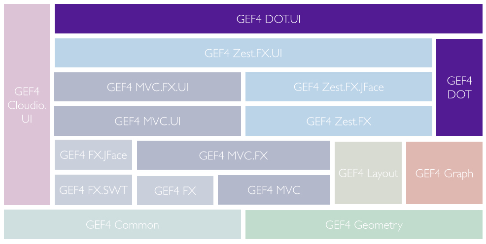

Note to non-wiki readers: This documentation is generated from the Eclipse wiki - if you have corrections or additions it would be awesome if you added them in the original wiki page .
The GEF4 DOT component provides support for Graphviz DOT, in terms of
It is internally decomposed into two modules, namely DOT and DOT.UI. There are also a couple of undeployed DOT Examples that demonstrate usage of the (still internal) API. The user documentation is provided in terms of the GEF4 DOT User Guide.

The DOT module of GEF4 DOT realizes the serializer and parser for the 'DOT Editor' as well as import/export functionality used by the 'DOT Graph View' and the 'Sync Graphviz Export' end-user features, as outlined in the GEF4 DOT User Guide. It does not provide any public API (yet), but exposes its internal API (guarded by an x-friends directive).
The {Root} package provides an importer ( DotImport) and exporter ( DotExport) between a Graphviz DOT and a related GEF4 Graph representation. The imported or to be exported graph has to make use of the attributes defined in DotAttributes.
DotImport provides support for importing a Graphviz DOT into a
GEF4 Graph data model, using the attributes defined in
DotAttributes.
/* We can create Graphs based on Graphviz Dot files and strings */
DotImport dotImport = new DotImport();
Graph graph = dotImport.importDot("graph { 1--2 ; 1--3 }");
Graph digraph = dotImport.importDot("digraph { 1->2 ; 1->3 }");
Internally, DotImport is based on an
Xtext-based parser. It uses the generated Xtext switch API to dynamically create
GEF4 Graph graphs from the DOT abstract syntax tree (represented as an EMF model).
DotExport can be used to serialize a
GEF4 Graph-model, which uses the attributes defined in
DotAttributes to a Graphviz DOT as follows:
/* Set up a directed graph with a single connection: */
Graph graph = new Graph.Builder()
.attr(DotAttributes._TYPE__G, DotAttributes._TYPE__G__GRAPH)
.node("n1")
.attr(DotAttributes._NAME__GNE, "1")
.attr(DotAttributes.LABEL__GNE, "Node 1")
.node("n2")
.attr(DotAttributes._NAME__GNE, "2")
.attr(DotAttributes.LABEL__GNE, "Node 2")
.edge("n1", "n2")
.attr(DotAttributes.LABEL__GNE, "A dotted edge")
.attr(DotAttributes.STYLE__GNE, EdgeStyle.DOTTED.toString())
.build();
/* Export the graph to a DOT string or a DOT file: */
System.out.println(new DotExport().exportDot(graph));
Internally, DotExport is based on
Xtend to keep its runtime dependencies minimal.
DotAttributes defines the (currently) supported
Graphviz attributes. It supports validation and parsing of all attribute values, using a dedicated attribute parser and validator where the attributes follow a specific grammar.
DotExecutableUtils is a utility class that can be used to execute the native Graphviz DOT executable, which is internally used by the 'DOT Graph View'.
In combination with
DotAttributes, DotExecutableUtils can e.g. be used to use the native Graphviz DOT executable for layout, as depicted in the
DotLayoutExample:
@Override
public void applyLayout(boolean clean) {
// convert a Graph with LayoutAttributes (input model to ILayoutAlgorithm) into one with DotAttributes, which can be
// exported to a DOT string; keep track of converted nodes (as a side-effect)
final Map<Node, String> nodesToNameMap = new HashMap<>();
IAttributeCopier layout2DotAttributesConverter = new IAttributeCopier() {
int nodeIndex = 0;
@Override
public void copy(IAttributeStore source, IAttributeStore target) {
if (source instanceof Node && target instanceof Node) {
// convert LayoutProperties#location to DotAttributes#pos (both refer to center locations)
Point location = LayoutProperties.getLocation((Node) source);
org.eclipse.gef4.dot.internal.parser.point.Point posParsed = PointFactory.eINSTANCE.createPoint();
posParsed.setX(location.x);
posParsed.setY(location.y);
DotAttributes.setPosParsed((Node) target, posParsed);
// provide unique names and keep track of the mapped nodes
DotAttributes._setName((Node) target, Integer.toString(++nodeIndex));
nodesToNameMap.put((Node) source, DotAttributes._getName((Node) target));
}
}
};
Graph dotGraph = new GraphCopier(layout2DotAttributesConverter).copy(context.getGraph());
// set graph type
DotAttributes._setType(dotGraph, DotAttributes._TYPE__G__DIGRAPH);
// specify layout algorithm
DotAttributes.setLayout(dotGraph, Layout.CIRCO.toString());
// export the dot string and call the dot executable to add layout info to it.
DotExport dotExport = new DotExport();
String dot = dotExport.exportDot(dotGraph);
File tmpFile = DotFileUtils.write(dot);
String[] dotResult = DotExecutableUtils.executeDot(new File(dotExecutablePath), true, tmpFile, null, null);
if (!dotResult[1].isEmpty()) {
System.err.println(dotResult[1]);
}
tmpFile.delete();
Graph layoutedDotGraph = new DotImport().importDot(dotResult[0]);
// transfer the DOT provided position information back to the input Graph
for (Node target : context.getGraph().getNodes()) {
String nodeName = nodesToNameMap.get(target);
for (Node source : layoutedDotGraph.getNodes()) {
if (nodeName.equals(DotAttributes._getName(source))) {
// convert back DotAttributes#pos to LayoutProperties#location
org.eclipse.gef4.dot.internal.parser.point.Point posParsed = DotAttributes.getPosParsed(source);
LayoutProperties.setLocation(target, new Point(posParsed.getX(), posParsed.getY()));
break;
}
}
}
}
The DOT.UI module of GEF4 DOT realizes the DOT editor as well as the DOT Graph View as end-user features, as outlined in the GEF4 DOT User Guide. It does not provide any public API (yet), but exposes its internal API (guarded by an x-friends directive).
The {Root} package provides org.eclipse.gef4.common.attributes.IAttributeCopier implementations that can be used to transfer attributes defined by DotAttributes into those defined by org.eclipse.gef4.zest.fx.ZestProperties.
Dot2ZestAttributesConverter and Zest2DotAttributesConverter are
org.eclipse.gef4.common.attributes.IAttributeCopier implementations that allow to convert between attributes defined by
DotAttributes and
org.eclipse.gef4.zest.fx.ZestProperties. This is internally used by the 'DOT Graph View' to render a DOT input based on
Zest.
The DotBSplineInterpolator is a specific
IConnectionInterpolator that can be used to properly render B-Splines as DOT specifies them for edge positions.
The DotArrowShapeDecorations utility class provides implementations for the different arrow shape edge decorations supported by DOT.